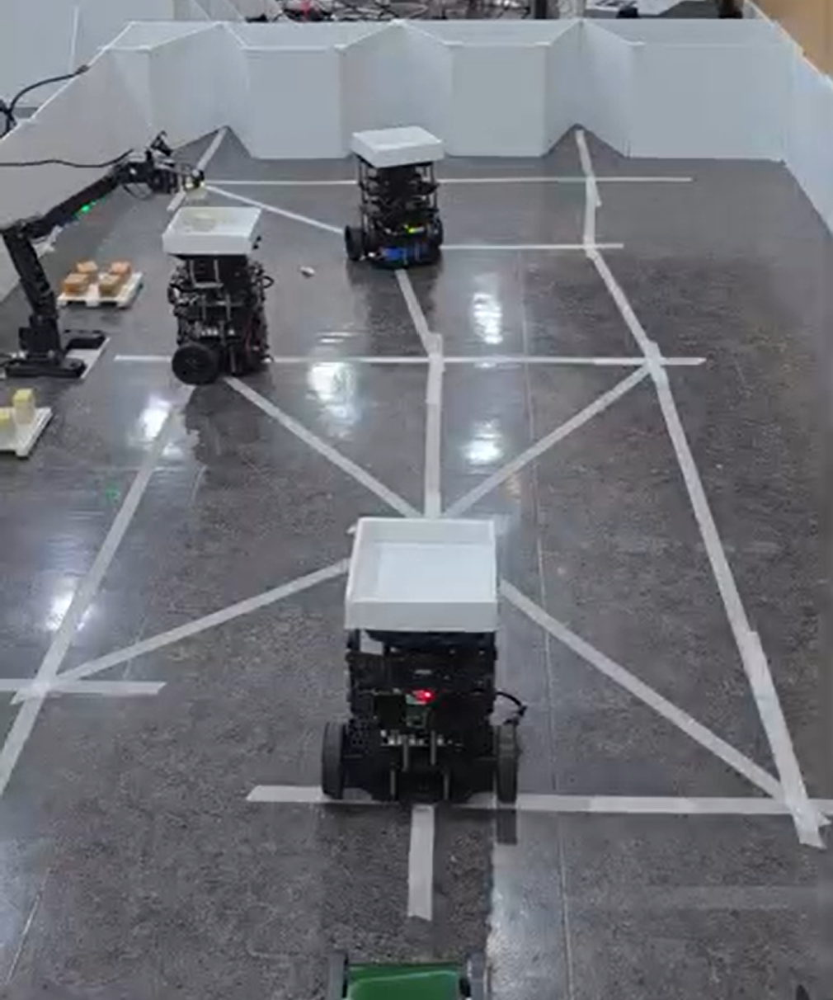

한국해양대학교 · 해상보험전공
한국해양대학교 · 해상보험전공
다중 로봇 물류 자동화
AX Multi-Robot Logistics
FMS의 작업 지시부터 AMR 이송, OMX 적재까지 연결하는 팀 프로젝트입니다. 저는 AMR 소프트웨어를 맡았습니다.


주문부터 이송·하역까지
경로 그래프·관제 위치 토픽 구현
Nav2 주행·EKF 위치추정 조정
주문·배차 → 피킹 위치 주행 → 적재 → 패킹 위치 이송 → 하역
AMR 담당 개발 내용
FMS용 경로 그래프
관제에서 사용할 노드·엣지 경로 그래프를 작성해 FMS 팀에 전달했습니다.
관제용 위치 토픽
관제의 위치 전달을 amcl_pose 직접 수신 방식에서
별도 ROS2 노드로 분리했습니다.
TF의 map → base_footprint 변환에서 위치를 읽어 토픽으로 발행하고,
FMS의 로봇 위치 표시에 연동했습니다.
Nav2 주행 파라미터
목표 도착 오차와 주행 안정성을 살피며 실기체 주행 파라미터를 조정하고 있습니다. 개선 효과는 추가 시험 후 정리할 예정입니다.
EKF 기반 위치추정
주행에 사용하는 위치추정 설정을 조정 중입니다. 적용 전후 궤적과 정지 상태 변화를 비교할 계획입니다.